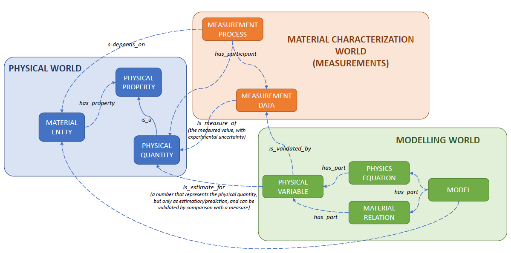
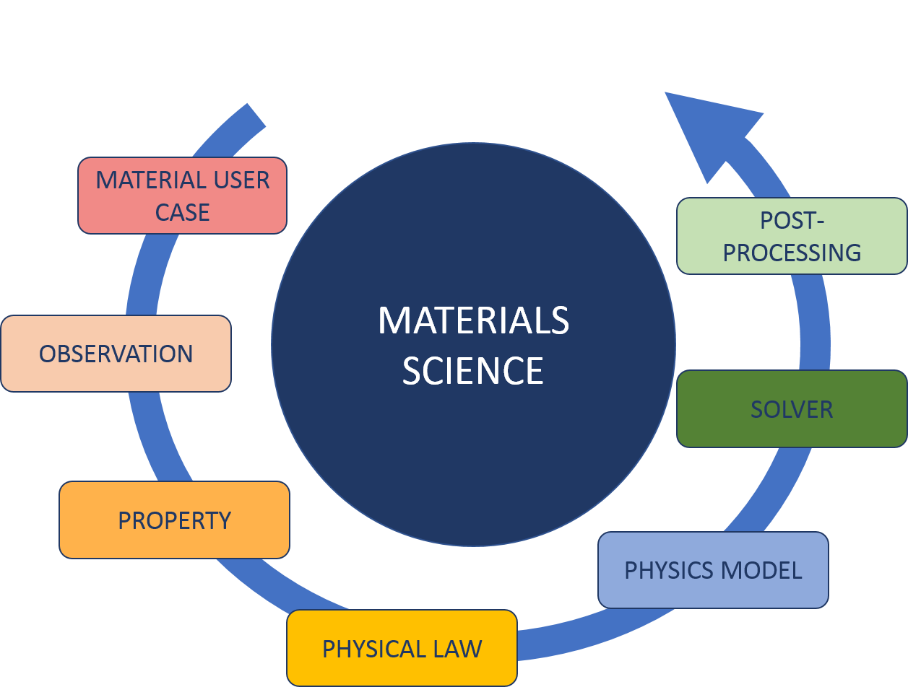
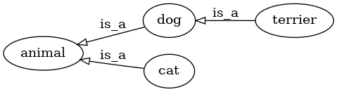
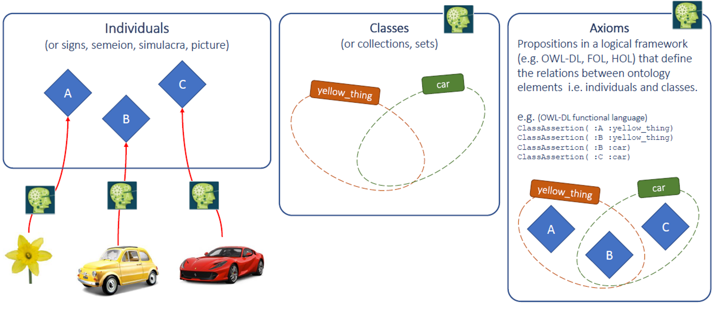
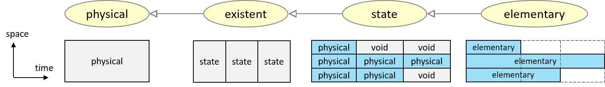
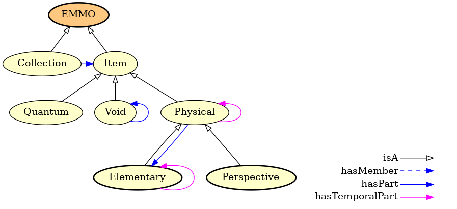
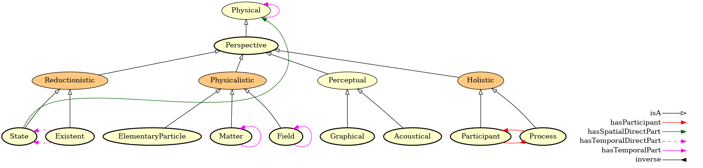
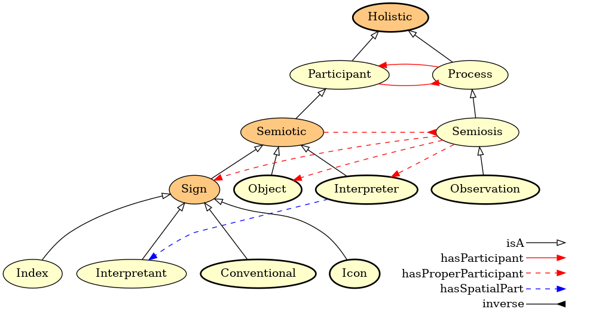
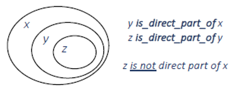

Introduction¶
EMMO is a multidisciplinary effort to develop a standard representational framework (the ontology) based on current materials modelling knowledge, including physical sciences, analytical philosophy and information and communication technologies. This multidisciplinarity is illustrated by the figure on the title page. It provides the connection between the physical world, materials characterisation world and materials modelling world.

EMMO is based on and is consistent with the Review of Materials Modelling, CEN Workshop Agreement and MODA template. However, while these efforts are written for humans, EMMO is defined using the Web Ontology Language (OWL), which is machine readable and allows for machine reasoning. In terms of semantic representation, EMMO brings everything to a much higher level than these foundations.
As illustrated in the figure below, EMMO covers all aspects of materials modelling and characterisation, including:
- the material itself, which must be described in a rigorous way;
- the observation process involving an observer that percieves the real world (characterisation);
- the properties that are measured or modelled;
- the physics laws that describe the material behaviour;
- the physical models that approximate the physics laws;
- the solver including the numerical discretisation method that leads to a solvable mathematical representation under certain simplifying assumptions;
- the numerical solver that performs the calculations; and
- the post processing of experimental or simulated data.

EMMO is released under the Creative Commons license and is available at emmo.info/. The OWL2-DL sources are available in RDF/XML format.
What is an ontology¶
In short, an ontology is a specification of a conceptualization. The word ontology has a long history in philosophy, in which it refers to the subject of existence. The so-called ontological argument for the existence of God was proposed by Anselm of Canterbury in 1078. He defined God as "that than which nothing greater can be thought", and argued that "if the greatest possible being exists in the mind, it must also exist in reality. If it only exists in the mind, then an even greater being must be possible -- one which exists both in the mind and in reality". Even though this example has little to do with todays use of ontologies in e.g. computer science, it illustrates the basic idea; the ontology defines some basic premises (concepts and relations between them) from which it is possible reason to gain new knowledge.
For a more elaborated and modern definition of the ontology we refer the reader to the one provided by Tom Gruber (2009). Another useful introduction to ontologies is the paper Ontology Development 101: A Guide to Creating Your First Ontology by Noy and McGuinness (2001), which is based on the Protege sortware, with which EMMO has been developed.
A taxonomy is a hierarchical representation of classes and subclasses connected via is_a relations.
Hence, it is a subset of the ontology excluding all but the is_a relations.
The main use of taxonomies is for the organisation of classifications.
The figure shows a simple example of a taxonomy illustrating a categorisation of four classes into a hierarchy of more higher of levels of generality.

In EMMO, the taxonomy is a rooted directed acyclic graph (DAG).
This is important since many classification methods relies on this property, see e.g. Valentini (2014) and Robison et al (2015).
Note, that EMMO is a DAG does not prevent some classes from having more than one parent.
A Variable is for instance both a Mathematical and a Symbol.
See appendix for the full EMMO taxonomy.
Primitive elements in EMMO¶

Individuals¶
Individuals are the basic, "ground level" components of EMMO. They may include concrete objects such as cars, flowers, stars, persons and molecules, as well as abstract individuals such as a measured height, a specific equation and software programs.
Individuals possess attributes in form of axioms that are defined by the user (interpreter) upon declaration.
Classes¶
Classes represent concepts. They are the building blocks that we use to create an ontology as a representation of knowledge. We distinguish between defined and non-defined classes.
Defined classes are defined by the requirements for being a member of the class.
In the graphical representations of EMMO, defined classes are orange.
For instance, in the graph of the top-level entity branch below, The root EMMO and a defined class (defined to be the disjoint union of Item and Collection).
Non-defined classes are defined as an abstract group of objects, whose members are defined as belonging to the class. They are yellow in the graphical representations.
%BRANCHFIG EMMO leaves=Perspective,Elementary caption='Example of the top-level branch of EMMO showing some classes and relationships between them.' width=460
Axioms¶
Axioms are propositions in a logical framework that define the relations between the individuals and classes. They are used to categorise individuals in classes and to define the defined classes.
The simplest form of a class axiom is a class description that just states the existence of the class and gives it an unique identifier. In order to provide more knowledge about the class, class axioms typically contain additional components that state necessary and/or sufficient characteristics of the class. OWL contains three language constructs for combining class descriptions into class axioms:
-
Subclass (
rdfs:subClassOf) allows one to say that the class extension of a class description is a subset of the class extension of another class description. -
Equivalence (
owl:equivalentClass) allows one to say that a class description has exactly the same class extension (i.e. the individuals associated with the class) as another class description. -
Distjointness (
owl:disjointWith) allows one to say that the class extension of a class description has no members in common with the class extension of another class description.
See the section about Description logic for more information about these language constructs. Axioms are also used to define relations between relations. These are further detailed in the chapter on Relations.
Theoretical foundations¶
EMMO build upon several theoretical frameworks.
Semiotics¶
Semiotics is the study of meaning-making. It is the dicipline of formulating something that possibly can exist in a defined space and time in the real world.
%%It is introdused in EMMO via the
%%semion class and used as a way to reduce the complexity of a
%%physical to a simple sign (symbol). A Sign is a physical
%%entity that can represent another object.
%%
%%### Set theory
%%Set theory is the theory of membership. This is introduced via
%%the set class, representing the collection of all individuals
%%(signs) that represent a collection of items. Sets are defined
%%via the hasMember relations.
Mereotopology¶
Mereotopology is the combination of mereology (science of parthood) and topology (mathematical study of the geometrical properties and conservation through deformations).
It is introdused via the Item class and based on the mereotopological relations.
Items in EMMO are always topologically connected in space and time.
EMMO makes a strong distinction between membership and parthood relations.
In contrast to collections, items can only have parts that are themselves items.
For further information, see Casati and Varzi "Parts and Places" (1999).
Physics¶
EMMO is strongly based on physics, with the aim of being able to describe all aspects and all domains of physics, from quantum mechanics to continuum, engeneering, chemistry, etc.
EMMO is compatible with both the De Broglie - Bohm and the Copenhagen interpretation of quantum mecanics (see Physical for more comments).
EMMO defines a physics-based parthood hierachy under Physical by introducing the following concepts (illustrated in the figure below):
-
Elementaryis the fundamental, non-divisible constituent of entities. In EMMO, elementaries are based on the standard model of physics. -
Stateis aPhysicalwhose parts does not change during its life time (at the chosen level of granularity). This is consistent with a state within e.g. thermodynamics. -
Existentis a succession of states.

Metrology¶
Metrology is the science of measurements. It introduces units and links them to properties. The description of metrology in EMMO is based on the standards of International System of Quantities (ISQ) and International System of Units (SI).
Description logic¶
Description logic (DL) is a formal knowledge representation language in which the axioms are expressed. It is less expressive than first-order logic (FOL), but commonly used for providing the logical formalism for ontologies and semantic web. EMMO is expressed in the Web Ontology Language (OWL), which in turn is based on DL. This brings along features like reasoning.
Since it is essential to have a basic notion of OWL and DL, we include here a very brief overview. For a proper introduction to OWL and DL, we refer the reader to sources like Grau et.al. (2008), OWL2 Primer and OWL Reference.
OWL distinguishes between six types of class descriptions:
- a class identifier (a IRI reference);
- an exhaustive enumeration of individuals that together form the instances of a class (
owl:oneOf); - a property restriction (
owl:someValuesFrom,owl:allValuesFrom,owl:hasValue,owl:cardinality,owl:minCardinality,owl:maxCardinality); - the intersection of two or more class descriptions (
owl:intersectionOf); - the union of two or more class descriptions (
owl:unionOf); and - the complement of a class description (
owl:complementOf).
Except for the first, all of these refer to defined classes. The table below shows the notation in OWL, DL and the Manchester OWL syntax, all commonly used for the definitions. The Manchester syntax is used by Protege and is designed to not use DL symbols and to be easy and quick to read and write. Several other syntaxes exist for DL. An interesting example is the pure Python syntax proposed by Lamy (2017), which is used in the open source Owlready2 Python package. The Python API for EMMO is also based on Owlready2.
DL Manchester Python + Owlready2 Read Meaning --------------- ----------------- ------------------- ------------------- -------------------- Constants
$\top$ Thing top A special class with every individual as an instance
$\bot$ Nothing bottom The empty class
Axioms
$A\doteq B$ A is defined to be Class definition equal to B
$A\sqsubseteq B$ A subclass_of B class A(B): ... all A are B Class inclusion
issubclass(A, B) Test for *inclusion*
$A\equiv B$ A equivalent_to B A.equivalent_to.append(B) A is equivalent to B Class equivalence
B in A.equivalent_to Test for equivalence
$a:A$ a is_a A a = A() a is a A Class assertion (instantiation)
isinstance(a, A) Test for instance of
$(a,b):R$ a object property a.R.append(b) a is R-related to b Property assertion assertion b
$(a,n):R$ a data property a.R.append(n) a is R-related to n Data assertion assertion n
Constructions
$A\sqcap B$ A and B A & B A and B Class intersection (conjunction)
$A\sqcup B$ A or B A | B A or B Class union (disjunction)
$\lnot A$ not A Not(A) not A Class complement (negation)
${a, b, ...}$ {a, b, ...} OneOf([a, b, ...]) one of a, b, ... Class enumeration
$S\equiv R^-$ S inverse_of R Inverse(R) S is inverse of R Property inverse
S.inverse == R Test for *inverse*
$\forall R.A$ R only A R.only(A) all A with R Universal restriction
$\exists R.A$ R some A R.some(A) some A with R Existential restriction
$=n R.A$ R exactly n A R.exactly(n, A) Cardinality restriction
$\leq n R.A$ R min n A R.min(n, A) Minimum cardinality restriction
$\geq n R.A$ R max n A R.max(n, A) Minimum cardinality restriction
$\exists R{a}$ R value a R.value(a) Value restriction
Decompositions
$A\sqcup B A disjoint with B AllDisjoint([A, B]) A disjoint with B Disjoint \sqsubseteq\bot$
B in A.disjoints() Test for disjointness
$\exists R.\top R domain A R.domain = [A] Classes that the restriction applies to \sqsubseteq A$
$\top\sqsubseteq R range B R.range = [B] All classes that can be the value of the restriction \forall R.B$
Table: Notation for DL and Protege. A and B are classes, R is an active relation, S is an passive relation, a and b are individuals and n is a literal. Inspired by the Great table of Description Logics.
Examples¶
Here are some examples of different class descriptions using both the DL and Manchester notation.
Equivalence (owl:equivalentTo)¶
Equivalence ($\equiv$) defines necessary and sufficient conditions.
Parent is equivalent to mother or father
DL: parent $\equiv$ mother $\lor$ father
Manchester: parent equivalent_to mother or father
Inclusion (rdf:subclassOf)¶
Inclusion ($\sqsubseteq$) defines necessary conditions.
An employee is a person.
DL: employee $\sqsubseteq$ person
Manchester: employee is_a person
Enumeration (owl:oneOf)¶
The color of a wine is either white, rose or red:
DL: wine_color $\equiv$ {white, rose, red}
Manchester: wine_color equivalent_to {white, rose, red}
Existential restriction (owl:someValuesFrom)¶
A mother is a woman that has a child (some person):
DL: mother $\equiv$ woman $\sqcap$ $\exists$has_child.person
Manchester: mother equivalent_to woman and has_child some person
Universal restriction (owl:allValuesFrom)¶
All parents that only have daughters:
DL: parents_with_only_daughters $\equiv$ person $\sqcap$ $\forall$has_child.woman
Manchester: parents_with_only_daughters equivalent_to person and has_child only woman
Value restriction (owl:hasValue)¶
The owl:hasValue restriction allows to define classes based on the existence of particular property values. There must be at least one matching property value.
All children of Mary:
DL: Marys_children $\equiv$ person $\sqcap$ $\exists$has_parent.{Mary}
Manchester: Marys_children equivalent_to person and has_parent value Mary
Property cardinality (owl:cardinality)¶
The owl:cardinality restrictions ($\geq$, $\leq$ or $\equiv$) allow to define classes based on the maximum (owl:maxCardinality), minimum (owl:minCardinality) or exact (owl:cardinality) number of occurences.
A person with one parent:
DL: half_orphant $\equiv$ person and =1has_parent.person
Manchester: half_orphant equivalent_to person and has_parent exactly 1 person
Intersection (owl:intersectionOf)¶
Individuals of the intersection ($\sqcap$) of two classes, are simultaneously instances of both classes.
A man is a person that is male:
DL: man $\equiv$ person $\sqcap$ male
Manchester: man equivalent_to person and male
Union (owl:unionOf)¶
Individuals of the union ($\sqcup$) of two classes, are either instances of one or both classes.
A person is a man or woman:
DL: person $\equiv$ man $\sqcup$ woman
Manchester: person equivalent_to man or woman
Complement (owl:complementOf)¶
Individuals of the complement ($\lnot$) of a class, are all individuals that are not member of the class.
Not a man:
DL: female $\equiv$ $\lnot$ male
Manchester: female equivalent_to not male
The structure of EMMO¶
The EMMO ontology is structured in shells, expressed by specific ontology fragments, that extends from fundamental concepts to the application domains, following the dependency flow.
Top Level¶
The EMMO top level is the group of fundamental axioms that constitute the philosophical foundation of the EMMO. Adopting a physicalistic/nominalistic perspective, the EMMO defines real world objects as 4D objects that are always extended in space and time (i.e. real world objects cannot be spaceless nor timeless). For this reason abstract objects, i.e. objects that does not extend in space and time, are forbidden in the EMMO.
EMMO is strongly based on the analytical philosophy dicipline semiotic. The role of abstract objects are in EMMO fulfilled by semiotic objects, i.e. real world objects (e.g. symbol or sign) that stand for other real world objects that are to be interpreted by an agent. These symbols appear in actions (semiotic processes) meant to communicate meaning by establishing relationships between symbols (signs).
Another important building block of from analytical philosophy is atomistic mereology applied to 4D objects. The EMMO calls it 'quantum mereology', since the there is a epistemological limit to how fine we can resolve space and time due to the uncertanity principles.
The mereotopology module introduces the fundamental mereotopological concepts and their relations with the real world objects that they represent. The EMMO uses mereotopology as the ground for all the subsequent ontology modules. The concept of topological connection is used to define the first distinction between ontology entities namely the Item and Collection classes. Items are causally self-connected objects, while collections are causally disconnected. Quantum mereology is represented by the Quantum class. This module introduces also the fundamental mereotopological relations used to distinguish between space and time dimensions.
The physical module, defines the Physical objects and the concept of Void that plays a fundamental role in the description of multiscale objects and quantum systems. It also define the Elementary class, that restricts mereological atomism in space.

In EMMO, the only univocally defined real world object is the Item individual called Universe that stands for the universe. Every other real world object is a composition of elementaries up to the most comprehensive object; the Universe. Intermediate objects are not univocally defined, but their definition is provided according to some specific philosophical perspectives. This is an expression of reductionism (i.e. objects are made of sub-objects) and epistemological pluralism (i.e. objects are always defined according to the perspective of an interpreter, or a class of interpreters).
The Perspective class collects the different ways to represent the objects that populate the conceptual region between the elementary and universe levels.
Middle Level¶
The middle level ontologies act as roots for extending the EMMO towards specific application domains.

The Reductionistic perspective class uses the fundamental non-transitive parthood relation, called direct parthood, to provide a powerful granularity description of multiscale real world objects. The EMMO can in principle represents the Universe with direct parthood relations as a direct rooted tree up to its elementary constituents.
The Phenomenic perspective class introduces the concept of real world objects that express of a recognisable pattern in space or time that impress the user. Under this class the EMMO categorises e.g. formal languages, pictures, geometry, mathematics and sounds. Phenomenic objects can be used in a semiotic process as signs.
The Physicalistic perspective class introduces the concept of real world objects that have a meaning for the under applied physics perspective.
The Holistic perspective class introduces the concept of real world objects that unfold in time in a way that has a meaning for the EMMO user, through the definition of the classes Process and Participant. The semiotics module introduces the concepts of semiotics and the Semiosis process that has a Sign, an Object and an Interpreter as participants. This forms the basis in EMMO to represent e.g. models, formal languages, theories, information and properties.

EMMO relations¶
All EMMO relations are subrelations of the relations found in the two roots: mereotopological and semiotical. The relation hierarchy extends more vertically (i.e. more subrelations) than horizontally (i.e. less sibling relations), facilitating the categorisation and inferencing of individuals. See also the chapter EMMO Relations.
Imposing all relations to fall under mereotopology or semiotics is how the EMMO force the developers to respect its perspectives. Two entities are related only by contact or parthood (mereotopology) or by standing one for another (semiosis): no other types of relation are possible within the EMMO.
A unique feature in EMMO, is the introduction of direct parthood. As illustrated in the figure below, it is a mereological relation that lacks transitivity. This makes it possible to entities made of parts at different levels of granularity and to go between granularity levels in a well-defined manner. This is paramount for cross scale interoperability. Every material in EMMO is placed on a granularity level and the ontology gives information about the direct upper and direct lower level classes using the non-transitive direct parthood relations.

Annotations¶
All entities and relations in EMMO have some attributes, called annotations. In some cases, only the required International Resource Identifier (IRI) and relations are provided. However, descriptive annotations, like elucidation and comment, are planned to be added for all classes and relations. Possible annotations are:
- Elucidation is a human readable explanation and clearification of the documented class or relation.
- Example clearifies the elucidation through an example. A class may have several examples, each addressing different aspects.
- Comment is a clearifying note complementing the definition and elucidation. A class may have several comments, each clearifying different aspects.
- IRI stands for international resource identifier. It is an identifier that uniquely identifies the class or relation. IRIs are similar to URIs, but are not restricted to the ASCII character set. In EMMO, the IRIs are now valid URLs pointing to the stable version of EMMO.
- Relations is a list of relations applying to the current class or relation. The relations for relations are special and will be elaborated on in the introduction to chapter [Relations]. Some of the listed relations are defined in the OWL sources, while other are inferred by the reasoner. The relations are expressed using the Manchester OWL syntax introduced in section Description logic.
%%### Graphs %%The generated graphs borrow some syntax from the Unified Modelling %%Language (UML), which is a general purpose language for software %%design and modelling. The table below shows the style used for the %%different types of relations and the concept they correspond to in %%UML. %% %%Relation UML arrow UML concept %%------------- ----------- ----------- %%is-a ![img][isa] inheritance %%disjoint_with ![img][djw] association %%equivalent_to ![img][eqt] association %%encloses ![img][rel] aggregation %%has_abstract_part ![img][rel] aggregation %%has_abstraction ![img][rel] aggregation %%has_representation ![img][rel] aggregation %%has_member ![img][rel] aggregation %%has_property ![img][rel] aggregation %% %%Table: Notation for arrow styles used in the graphs. Only active %%relations are listed. Corresponding passive relations use the same %%style. %% %%[isa]: figs/arrow-is_a.png "inheritance" %%[djw]: figs/arrow-disjoint_with.png "association" %%[eqt]: figs/arrow-equivalent_to.png "association" %%[rel]: figs/arrow-relation.png "aggregation"
%%All relationships have a direction. In the graphical visualisations, %%the relationships are represented with an arrow pointing from the %%subject to the object. In order to reduce clutter and limit the size %%of the graphs, the relations are abbreviated according to the %%following table: %% %%Relation Abbreviation %%-------- ------------ %%has_part only hp-o %%is_part_of only ipo-o %%has_member some hm-s %%is_member_of some imo-s %%has_abstraction some ha-s %%is_abstraction_of some iao-s %%has_abstract_part only pap-o %%is_abstract_part_of only iapo-o %%has_space_slice some hss-s %%is_space_slice_of some isso-s %%has_time_slice some hts-s %%is_time_slice_of some itso-s %%has_projection some hp-s %%is_projection_of some ipo-s %%has_proper_part some hpp-s %%is_proper_part_of some ippo-s %%has_proper_part_of some hppo-s %%has_spatial_direct_part min hsdp-m %%has_spatial_direct_part some hsdp-s %%has_spatial_direct_part exactly hsdp-e %% %%Table: Abbriviations of relations used in the graphical representation %%of the different subbranches. %% %% %%UML represents classes as a box with three compartments; names, attributes %%and operators. However, since the classes in EMMO have no operators and %%since it gives little meaning to include the OWL annotations as attributes, %%we simply represent the classes as boxes by a name. %% %%As already mentioned, defined classes are colored orange, while %%undefined classes are yellow. %% %% %%